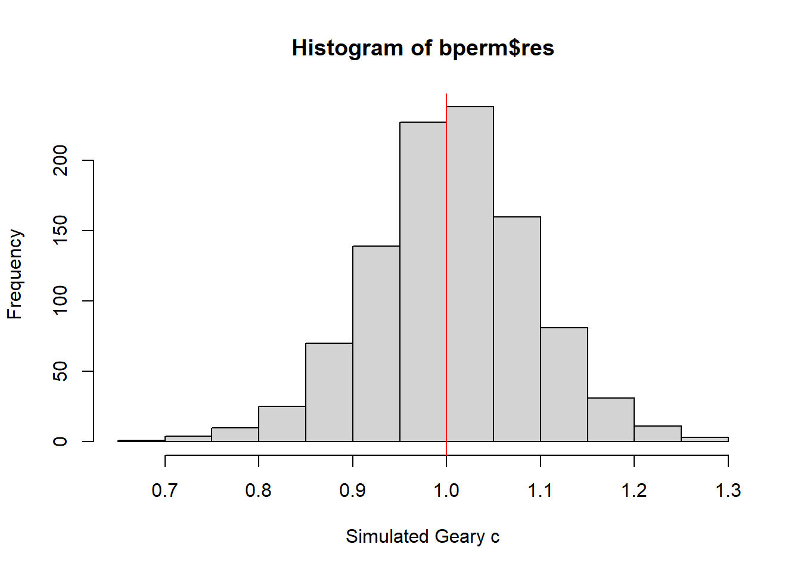
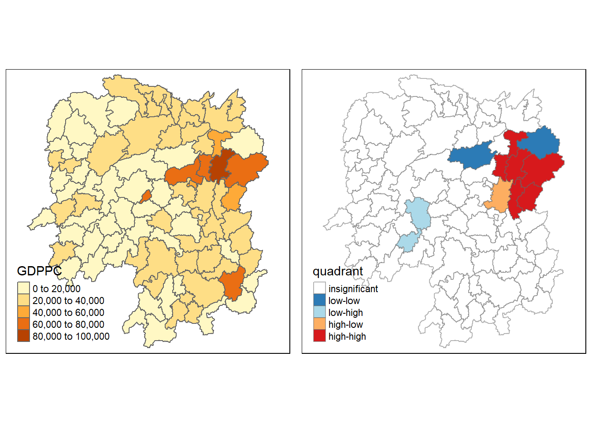

pacman::p_load(spdep, sf, tidyverse, tmap)Global & Local Measures of Spatial Autocorrelation [4]
4.1 OVERVIEW
This exercise focuses :
Compute Global and Local Measure of Spatial Autocorrelation (GLSA).
Solve analytical scenario :
Apply appropriate spatial statistical methods to discover if development are even distributed geographically.
If the answer is No, next -- “is there sign of spatial clustering?”.
If the answer for this question is Yes, next -- “where are these clusters?”
Examine the spatial pattern of a selected development indicator (i.e. GDP per capita) of Hunan province, PRC.
4.2 R PACKAGE REQUIRED
Following are the packages require for this exercise :
spdep compute :
poly2nb( ) - compute contiguity weight matrices for the study area.
nb2listw( ) - supplements a neighbours list with spatial weights for the chosen coding scheme.
moran.test( ) - for spatial autocorrelation using a spatial weights matrix in weights list form.
moran.mc( ) - for permutation test with Moran’s I statistic.
geary.test( ) - for spatial autocorrelation using a spatial weights matrix in weights list form.
geary.mc( ) - for permutation test with Geary’s C statistic.
sp.correlogram( ) - spatial correlograms for Moran’s I and the autocorrelation coefficient.
localmoran( ) - to calculate local spatial statistics for each zone based on the spatial weights object used.
moran.plot( ) - plot of spatial data against its spatially lagged values.
knearneigh ( ) - return matrix with the indices of points belonging to the set of the k nearest neighbours of each other.
knn2nb( ) - convert knn object to a neighbours list of class nb.
nbdist( ) - return the length of neighbour relationship edges.
dnearneigh( ) - derive distance-based weight matrices.
localG( ) - calculate local spatial statistic G for each zone based on the spatial weights object used.
sf compute :
st_read( ) - import shapefile as a simple feature data frame.
st_centroid( ) - takes a polygon or multipolygon and returns the geometric center of the bounding box of the polygon or multipolygon as a point.
tidyverse, consists the following functions :
readr :
- read_csv( ) - importing delimited text file.
-
- left_join( ) - join geographical data and attribute table.
purrr:
- map_dbl( ) - output double vectors.
tmap package
- qtm( )- to plot quick thematic map.
- tm_shape( ) - specify the shape object.
plot( ) - Generic function for plotting of R objects.
printCoefmat( ) - print coefficient matrices.
scale( ) - a generic function whose default method centers and/or scales the columns of a numeric matrix.
unlist( ) = remove the list structure of the returned object.
4.3 GEOSPATIAL DATA
4.3.1 acquire data source
Hunan province administrative boundary layer at county level. This is a geospatial data set in ESRI shapefile format.
Hunan_2012.csv: This csv file contains selected Hunan’s local development indicators in 2012.
4.3.2 import shapefile
hunan <- st_read(dsn = "data/geospatial",
layer = "Hunan")Reading layer `Hunan' from data source `D:\jephOstan\ISSS624\data\geospatial' using driver `ESRI Shapefile'
Simple feature collection with 88 features and 7 fields
Geometry type: POLYGON
Dimension: XY
Bounding box: xmin: 108.7831 ymin: 24.6342 xmax: 114.2544 ymax: 30.12812
Geodetic CRS: WGS 844.3.3 import csv file
hunan2012 <- read_csv("data/aspatial/Hunan_2012.csv")Rows: 88 Columns: 29
── Column specification ────────────────────────────────────────────────────────
Delimiter: ","
chr (2): County, City
dbl (27): avg_wage, deposite, FAI, Gov_Rev, Gov_Exp, GDP, GDPPC, GIO, Loan, ...
ℹ Use `spec()` to retrieve the full column specification for this data.
ℹ Specify the column types or set `show_col_types = FALSE` to quiet this message.4.3.4 perform relational join
hunan <- left_join(hunan,hunan2012)Joining, by = "County"4.3.5 visualise regional development indicator
equal <- tm_shape(hunan) +
tm_fill("GDPPC",
n = 5,
style = "equal") +
tm_borders(alpha = 0.5) +
tm_layout(main.title = "Equal interval classification")
quantile <- tm_shape(hunan) +
tm_fill("GDPPC",
n = 5,
style = "quantile") +
tm_borders(alpha = 0.5) +
tm_layout(main.title = "Equal quantile classification")
tmap_arrange(equal,
quantile,
asp=1,
ncol=2)
4.4 GLOBAL SPATIAL AUTOCORRELATION
This section focuses on :
- Compute global spatial autocorrelation statistics.
- Perform spatial complete randomness test for Global Spatial Autocorrelation (GSA).
4.4.1 compute contiguity spatial weights
Use poly2nb( ) first to compute contiguity weight matrices for the study area before can compute the global spatial autocorrelation statistics.
This function :
builds a neighbours list based on regions with contiguous boundaries.
by default, return a list of first order neighbours based on Queen criteria.
wm_q <- poly2nb(hunan,
queen=TRUE)
summary(wm_q)Neighbour list object:
Number of regions: 88
Number of nonzero links: 448
Percentage nonzero weights: 5.785124
Average number of links: 5.090909
Link number distribution:
1 2 3 4 5 6 7 8 9 11
2 2 12 16 24 14 11 4 2 1
2 least connected regions:
30 65 with 1 link
1 most connected region:
85 with 11 links4.4.2 compute row-standardised weights matrix
Assign weights to each neighboring polygon.
Each neighboring polygon will be assigned equal weight (style=“W”).
rswm_q <- nb2listw(wm_q, style = "W", zero.policy = TRUE)
rswm_qCharacteristics of weights list object:
Neighbour list object:
Number of regions: 88
Number of nonzero links: 448
Percentage nonzero weights: 5.785124
Average number of links: 5.090909
Weights style: W
Weights constants summary:
n nn S0 S1 S2
W 88 7744 88 37.86334 365.9147Weights constants summary :
n = zone = 88
nn = n * n = 7744
S0 = global sum of weights = 88
S1 = S1 sum of weights = 37.86334
S2 = S2 sum of weights = 365.9147
The input of nb2listw( ) must be an object of class nb.
The syntax of the function has two major arguments, namely style & zero.polycy.
style can take values “W”, “B”, “C”, “U”, “minmax” and “S”.
- B is the basic binary coding
- W is row standardised (sums over all links to n)
- C is globally standardised (sums over all links to n)
- U is equal to C divided by the number of neighbours (sums over all links to unity)
- S is the variance-stabilizing coding scheme (proposed by Tiefelsdorf et al. 1999, p. 167-168 (sums over all links to n)).
zero.policy = TRUE, weights vectors of zero length are inserted for regions without neighbour in the neighbours list.
>> These will in turn generate lag values of zero, equivalent to the sum of products of the zero row t(rep(0, length=length(neighbours))) %*% x, for arbitrary numerical vector x of length length(neighbours).
>> The spatially lagged value of x for the zero-neighbour region will then be zero, which may (or may not) be a sensible choice.
nb2listw(neighbours, glist=NULL, style="W", zero.policy=NULL)
arguments :
* neighbours = an object of class nb
* glist = list of general weights corresponding to neighbours
* style = style can take values “W”, “B”, “C”, “U”, “minmax” and “S”
* zero.policy = default NULL, use global option value;
>> if FALSE stop with error for any empty neighbour sets,
>> if TRUE permit the weights list to be formed with zero-length weights vectors.
4.4.3 test for GSA : Moran’s I method
Given a set of features and an associated attribute, it evaluates whether the pattern expressed is clustered, dispersed, or random.
The tool calculates the Moran’s I Index value and both a a z-score and p-value to evaluate the significance of that Index.
P-values are numerical approximations of the area under the curve for a known distribution, limited by the test statistic.
moran.test(x, listw, randomisation=TRUE, zero.policy=NULL,
alternative="greater", rank = FALSE, na.action=na.fail, spChk=NULL,
adjust.n=TRUE, drop.EI2=FALSE)
arguments :
* x = a numeric vector the same length as the neighbours list in listw.
* listw = a listw object created for example by nb2listw.
* randomisation = variance of I calculated under the assumption of randomisation, if FALSE normality.
* zero.policy = default NULL, use global option value; if TRUE assign zero to the lagged value of zones without neighbours, if FALSE assign NA .
* alternative = a character string specifying the alternative hypothesis, must be one of greater (default), less or two.sided.
* rank = logical value - default FALSE for continuous variables, if TRUE, uses the adaptation of Moran's I for ranks suggested by Cliff and Ord (1981, p. 46)
* na.action = a function (default na.fail), can also be na.omit or na.exclude - in these cases the weights list will be subsetted to remove NAs in the data. It may be necessary to set zero.policy to TRUE because this subsetting may create no-neighbour observations. Note that only weights lists created without using the glist argument to nb2listw may be subsetted. If na.pass is used, zero is substituted for NA values in calculating the spatial lag
* spChk = should the data vector names be checked against the spatial objects for identity integrity, TRUE, or FALSE, default NULL to use get.spChkOption()
* adjust.n = default TRUE, if FALSE the number of observations is not adjusted for no-neighbour observations, if TRUE, the number of observations is adjusted
* drop.EI2 = default FALSE, if TRUE, emulate CrimeStat <= 4.02moran.test(hunan$GDPPC, listw = rswm_q, zero.policy = TRUE, na.action = na.omit)
Moran I test under randomisation
data: hunan$GDPPC
weights: rswm_q
Moran I statistic standard deviate = 4.7351, p-value = 1.095e-06
alternative hypothesis: greater
sample estimates:
Moran I statistic Expectation Variance
0.300749970 -0.011494253 0.004348351 !!!!! Moron I statistic = Moran’s Index?
!!!!! Expectation = Expected I?
!!!! What statistical conclusion can draw from the output above?
With Moran I statistic 0.300749970, GDPPC is positively autocorrelated in Hunan, i.e. the data is spatially cluster.
There is a statistical significant with p-value (0.000001095) < 0.001, smaller than the alpha value to support the rejection of null hypothesis for the test i.e. there is no spatial autocorrelation in the GDPPC data.
Do a permutation test to evaluate the rank of the observed statistic in relation to the statistic of simulated values.
In other words, calculate the Moran’s I for each random shuffle, then compare the actual Moran’s I to the random Moran’s I.
checked against those of
moran.mcpermutations.
4.4.3.1 compute Monte Carlo Moran’s I
moran.mc(x, listw, nsim, zero.policy=NULL, alternative="greater",
na.action=na.fail, spChk=NULL, return_boot=FALSE, adjust.n=TRUE
)
arguments :
* x = a numeric vector the same length as the neighbours list in listw.
* listw = a listw object created for example by nb2listw.
* nsim = number of permutations.
* zero.policy = default NULL, use global option value;
>> if TRUE assign zero to the lagged value of zones without neighbours,
>> if FALSE assign NA.
* alternative = a character string specifying the alternative hypothesis, must be one of "greater" (default), "two.sided", or "less".
* na.action = a function (default na.fail), can also be na.omit or na.exclude - in these cases the weights list will be subsetted to remove NAs in the data.
>> It may be necessary to set zero.policy to TRUE because this subsetting may create no-neighbour observations.
>> Note that only weights lists created without using the glist argument to nb2listw may be subsetted.
>> na.pass is not permitted because it is meaningless in a permutation test.
* spChk = should the data vector names be checked against the spatial objects for identity integrity, TRUE, or FALSE, default NULL to use get.spChkOption( )
* return_boot = return an object of class boot from the equivalent permutation bootstrap rather than an object of class htest
* adjust.n = default TRUE,
>> if FALSE the number of observations is not adjusted for no-neighbour observations,
>> if TRUE, the number of observations is adjusted.The Monte-Carlo simulation was run for 1000 times.
set.seed(1234)
bperm = moran.mc(hunan$GDPPC,
listw = rswm_q,
nsim = 999,
zero.policy = TRUE,
na.action = na.omit)
bperm
Monte-Carlo simulation of Moran I
data: hunan$GDPPC
weights: rswm_q
number of simulations + 1: 1000
statistic = 0.30075, observed rank = 1000, p-value = 0.001
alternative hypothesis: greater!!!!! what statistical conclusion can you draw from the output above?
The random Moran I statistic 0.30075 is very close to the actual Moran I statistic 0.300749970.
There is a statistical significant with p-value 0.001 = 0.001?
4.4.3.2 visualise Monte Carlo Moran’s I
Examine the simulated Moran’s I test statistics by plotting the distribution of the statistical values as a histogram.
mean(bperm$res[1:999])[1] -0.01504572var(bperm$res[1:999])[1] 0.004371574summary(bperm$res[1:999]) Min. 1st Qu. Median Mean 3rd Qu. Max.
-0.18339 -0.06168 -0.02125 -0.01505 0.02611 0.27593 hist(bperm$res,
freq=TRUE,
breaks=20,
xlab="Simulated Moran's I")
abline(v=0,
col="red") 
What statistical observation can you draw from the output above?
Challenge: Instead of using Base Graph to plot the values, plot the values by using ggplot2 package.
4.4.4 test for GSA : Geary’s method
4.4.4.1 Geary’s C test
The code chunk below performs Geary’s C test for spatial autocorrelation by using geary.test() of spdep.
geary.test(x, listw, randomisation=TRUE, zero.policy=NULL,
alternative="greater", spChk=NULL, adjust.n=TRUE)
arguments :
* x = a numeric vector the same length as the neighbours list in listw
* listw = a listw object created for example by nb2listw
* randomisation = variance of I calculated under the assumption of randomisation, if FALSE normality
* zero.policy = default NULL, use global option value; if TRUE assign zero to the lagged value of zones without neighbours, if FALSE assign NA
* alternative = a character string specifying the alternative hypothesis, must be one of "greater" (default), "less" or "two.sided".
* spChk = should the data vector names be checked against the spatial objects for identity integrity, TRUE, or FALSE, default NULL to use get.spChkOption()
* adjust.n = default TRUE, if FALSE the number of observations is not adjusted for no-neighbour observations, if TRUE, the number of observations is adjusted.geary.test(hunan$GDPPC, listw=rswm_q)
Geary C test under randomisation
data: hunan$GDPPC
weights: rswm_q
Geary C statistic standard deviate = 3.6108, p-value = 0.0001526
alternative hypothesis: Expectation greater than statistic
sample estimates:
Geary C statistic Expectation Variance
0.6907223 1.0000000 0.0073364 !!!!! what statistical conclusion can you draw from the output above?
With Geary C statistic 0.6907223, GDPPC is positively autocorrelated in Hunan, i.e. the data is spatially cluster.
There is a statistical significant with p-value (0.0001526) < 0.001, smaller than the alpha value to support the rejection of null hypothesis for the test i.e. there is no spatial autocorrelation in the GDPPC data.
4.4.4.2 Computing Monte Carlo Geary’s C
geary.mc(x, listw, nsim, zero.policy=NULL, alternative="greater",
spChk=NULL, adjust.n=TRUE, return_boot=FALSE)
arguments :
* x = a numeric vector the same length as the neighbours list in listw
* listw = a listw object created for example by nb2listw
* nsim = number of permutations
* zero.policy = default NULL, use global option value; if TRUE assign zero to the lagged value of zones without neighbours, if FALSE assign NA
* alternative = a character string specifying the alternative hypothesis, must be one of "greater" (default), or "less"; this reversal corresponds to that on geary.test described in the section on the output statistic value, based on Cliff and Ord 1973, p. 21 (changed 2011-04-11, thanks to Daniel Garavito).
* spChk = should the data vector names be checked against the spatial objects for identity integrity, TRUE, or FALSE, default NULL to use get.spChkOption()
* adjust.n = default TRUE, if FALSE the number of observations is not adjusted for no-neighbour observations, if TRUE, the number of observations is adjusted
* return_boot = return an object of class boot from the equivalent permutation bootstrap rather than an object of class htestset.seed(1234)
bperm = geary.mc(hunan$GDPPC,
listw = rswm_q,
nsim = 999)
bperm
Monte-Carlo simulation of Geary C
data: hunan$GDPPC
weights: rswm_q
number of simulations + 1: 1000
statistic = 0.69072, observed rank = 1, p-value = 0.001
alternative hypothesis: greater!!!!! statistical conclusion can you draw from the output above?
4.4.4.3 visualise the Monte Carlo Geary’s C
mean(bperm$res[1:999])[1] 1.004402var(bperm$res[1:999])[1] 0.007436493summary(bperm$res[1:999]) Min. 1st Qu. Median Mean 3rd Qu. Max.
0.7142 0.9502 1.0052 1.0044 1.0595 1.2722 hist(bperm$res, freq=TRUE, breaks=20, xlab="Simulated Geary c")
abline(v=1, col="red") 
!!!!! statistical conclusion can you draw from the output above?
4.5 SPATIAL CORRELOGRAM
Examine patterns of spatial autocorrelation for model residuals.
Show how correlated are pairs of spatial observations when increase the distance (lag).
Plots index of autocorrelation (Moran’s I or Geary’s c) against distance.
Correlogram provides richer information although it is not as fundamental as variograms (a keystone concept of geostatistics)
Very useful as an exploratory and descriptive tool.
4.5.1 compute and plot Moran’s I correlogram
sp.correlogram(neighbours, var, order = 1, method = "corr", style = "W",
randomisation = TRUE, zero.policy = NULL, spChk = NULL
)
arguments :
* neighbours = an object of class nb.
* var = a numeric vector.
* order = maximum lag order.
* method = "corr" for correlation, "I" for Moran's I, "C" for Geary's C.
* style = style can take values W, B, C, and S.
* randomisation = variance of I or C calculated under the assumption of randomisation, if FALSE normality.
* zero.policy = default NULL, use global option value; if FALSE stop with error for any empty neighbour sets, if TRUE permit the weights list to be formed with zero-length weights vectors.
* spChk = should the data vector names be checked against the spatial objects for identity integrity, TRUE, or FALSE, default NULL to use get.spChkOption( ).
* x = an object from sp.correlogram( ) of class spcor.
* p.adj.method = correction method as in p.adjust.
* main = an overall title for the plot.
* ylab = a title for the y axis.
* ylim = the y limits of the plot.
* ... = further arguments passed through.MI_corr <- sp.correlogram(wm_q,
hunan$GDPPC,
order=6,
method="I",
style="W")
plot(MI_corr)
Not all autocorrelation values are statistically significant, so by plotting the output is insufficient to provide complete interpretation.
Hence, it is important to examine the full analysis report by printing out the analysis results.
print(MI_corr)Spatial correlogram for hunan$GDPPC
method: Moran's I
estimate expectation variance standard deviate Pr(I) two sided
1 (88) 0.3007500 -0.0114943 0.0043484 4.7351 2.189e-06 ***
2 (88) 0.2060084 -0.0114943 0.0020962 4.7505 2.029e-06 ***
3 (88) 0.0668273 -0.0114943 0.0014602 2.0496 0.040400 *
4 (88) 0.0299470 -0.0114943 0.0011717 1.2107 0.226015
5 (88) -0.1530471 -0.0114943 0.0012440 -4.0134 5.984e-05 ***
6 (88) -0.1187070 -0.0114943 0.0016791 -2.6164 0.008886 **
---
Signif. codes: 0 '***' 0.001 '**' 0.01 '*' 0.05 '.' 0.1 ' ' 1!!!!! statistical conclusion can you draw from the output above?
4.5.2 compute and plot Geary’s C correlogram
GC_corr <- sp.correlogram(wm_q, hunan$GDPPC, order = 6,
method = "C", style = "W")
plot(GC_corr)
print(GC_corr)Spatial correlogram for hunan$GDPPC
method: Geary's C
estimate expectation variance standard deviate Pr(I) two sided
1 (88) 0.6907223 1.0000000 0.0073364 -3.6108 0.0003052 ***
2 (88) 0.7630197 1.0000000 0.0049126 -3.3811 0.0007220 ***
3 (88) 0.9397299 1.0000000 0.0049005 -0.8610 0.3892612
4 (88) 1.0098462 1.0000000 0.0039631 0.1564 0.8757128
5 (88) 1.2008204 1.0000000 0.0035568 3.3673 0.0007592 ***
6 (88) 1.0773386 1.0000000 0.0058042 1.0151 0.3100407
---
Signif. codes: 0 '***' 0.001 '**' 0.01 '*' 0.05 '.' 0.1 ' ' 14.6 CLUSTER AND OUTLIER ANALYSIS
Use Local Indicators for Spatial Association (LISA) method, especially local Moran’s I to detect cluster and / or outlier.
4.6.1 compute local Moran’s I
localmoran(x, listw, zero.policy=NULL, na.action=na.fail, conditional=FALSE,
alternative = "greater", p.adjust.method="none", mlvar=TRUE,
spChk=NULL, adjust.x=FALSE
)
Value
** Ii = local moran statistic
** E.Ii = expectation of local moran statistic
** Var.Ii = variance of local moran statistic
** Z.Ii = standard deviate of local moran statistic
** Pr() = p-value of local moran statistic
arguments :
* x = a numeric vector the same length as the neighbours list in listw
* listw = a listw object created for example by nb2listw
* zero.policy = default NULL, use global option value; if TRUE assign zero to the lagged value of zones without neighbours, if FALSE assign NA
* na.action = a function (default na.fail), can also be na.omit or na.exclude
>> in these cases the weights list will be subsetted to remove NAs in the data.
>> It may be necessary to set zero.policy to TRUE because this subsetting may create no-neighbour observations.
>> Note that only weights lists created without using the glist argument to nb2listw may be subsetted.
>> If na.pass is used, zero is substituted for NA values in calculating the spatial lag. (Note that na.exclude will only work properly starting from R 1.9.0, na.omit and na.exclude assign the wrong classes in 1.8.*)
* conditional = default FALSE: expectation and variance are calculated using the total randomization null (Sokal 1998 Eqs. A3 & A4). If TRUE: expectation and variance are calculated using the conditional randomization null (Sokal 1998 Eqs. A7 & A8). Elaboration of these changes available in Sauer 2021.
* alternative = a character string specifying the alternative hypothesis, must be one of greater (default), less or two.sided.
* p.adjust.method = a character string specifying the probability value adjustment for multiple tests, default "none"; see p.adjustSP. Note that the number of multiple tests for each region is only taken as the number of neighbours + 1 for each region, rather than the total number of regions.
* mlvar = default TRUE: values of local Moran's I are reported using the variance of the variable of interest (sum of squared deviances over n), but can be reported as the sample variance, dividing by (n-1) instead; both are used in other implementations.
* spChk = should the data vector names be checked against the spatial objects for identity integrity, TRUE, or FALSE, default NULL to use get.spChkOption()
* adjust.x = default FALSE, if TRUE, x values of observations with no neighbours are omitted in the mean of x
* nsim = default 499, number of conditonal permutation simulations
* sample_Ei = default TRUE; if conditional permutation, use the sample $E_i$ values, or the analytical values, leaving only variances calculated by simulation.
* iseed = default NULL, used to set the seed for possible parallel RNGsfips <- order(hunan$County)
localMI <- localmoran(hunan$GDPPC, rswm_q)
head(localMI) Ii E.Ii Var.Ii Z.Ii Pr(z != E(Ii))
1 -0.001468468 -2.815006e-05 4.723841e-04 -0.06626904 0.9471636
2 0.025878173 -6.061953e-04 1.016664e-02 0.26266425 0.7928094
3 -0.011987646 -5.366648e-03 1.133362e-01 -0.01966705 0.9843090
4 0.001022468 -2.404783e-07 5.105969e-06 0.45259801 0.6508382
5 0.014814881 -6.829362e-05 1.449949e-03 0.39085814 0.6959021
6 -0.038793829 -3.860263e-04 6.475559e-03 -0.47728835 0.63315684.6.1.1 list the local Moran matrix derived
printCoefmat(data.frame(localMI[fips,], row.names=hunan$County[fips]), check.names=FALSE) Ii E.Ii Var.Ii Z.Ii Pr.z....E.Ii..
Anhua -2.2493e-02 -5.0048e-03 5.8235e-02 -7.2467e-02 0.9422
Anren -3.9932e-01 -7.0111e-03 7.0348e-02 -1.4791e+00 0.1391
Anxiang -1.4685e-03 -2.8150e-05 4.7238e-04 -6.6269e-02 0.9472
Baojing 3.4737e-01 -5.0089e-03 8.3636e-02 1.2185e+00 0.2230
Chaling 2.0559e-02 -9.6812e-04 2.7711e-02 1.2932e-01 0.8971
Changning -2.9868e-05 -9.0010e-09 1.5105e-07 -7.6828e-02 0.9388
Changsha 4.9022e+00 -2.1348e-01 2.3194e+00 3.3590e+00 0.0008
Chengbu 7.3725e-01 -1.0534e-02 2.2132e-01 1.5895e+00 0.1119
Chenxi 1.4544e-01 -2.8156e-03 4.7116e-02 6.8299e-01 0.4946
Cili 7.3176e-02 -1.6747e-03 4.7902e-02 3.4200e-01 0.7324
Dao 2.1420e-01 -2.0824e-03 4.4123e-02 1.0297e+00 0.3032
Dongan 1.5210e-01 -6.3485e-04 1.3471e-02 1.3159e+00 0.1882
Dongkou 5.2918e-01 -6.4461e-03 1.0748e-01 1.6338e+00 0.1023
Fenghuang 1.8013e-01 -6.2832e-03 1.3257e-01 5.1198e-01 0.6087
Guidong -5.9160e-01 -1.3086e-02 3.7003e-01 -9.5104e-01 0.3416
Guiyang 1.8240e-01 -3.6908e-03 3.2610e-02 1.0305e+00 0.3028
Guzhang 2.8466e-01 -8.5054e-03 1.4152e-01 7.7931e-01 0.4358
Hanshou 2.5878e-02 -6.0620e-04 1.0167e-02 2.6266e-01 0.7928
Hengdong 9.9964e-03 -4.9063e-04 6.7742e-03 1.2742e-01 0.8986
Hengnan 2.8064e-02 -3.2160e-04 3.7597e-03 4.6294e-01 0.6434
Hengshan -5.8201e-03 -3.0437e-05 5.1076e-04 -2.5618e-01 0.7978
Hengyang 6.2997e-02 -1.3046e-03 2.1865e-02 4.3486e-01 0.6637
Hongjiang 1.8790e-01 -2.3019e-03 3.1725e-02 1.0678e+00 0.2856
Huarong -1.5389e-02 -1.8667e-03 8.1030e-02 -4.7503e-02 0.9621
Huayuan 8.3772e-02 -8.5569e-04 2.4495e-02 5.4072e-01 0.5887
Huitong 2.5997e-01 -5.2447e-03 1.1077e-01 7.9685e-01 0.4255
Jiahe -1.2431e-01 -3.0550e-03 5.1111e-02 -5.3633e-01 0.5917
Jianghua 2.8651e-01 -3.8280e-03 8.0968e-02 1.0204e+00 0.3076
Jiangyong 2.4337e-01 -2.7082e-03 1.1746e-01 7.1800e-01 0.4728
Jingzhou 1.8270e-01 -8.5106e-04 2.4363e-02 1.1759e+00 0.2396
Jinshi -1.1988e-02 -5.3666e-03 1.1334e-01 -1.9667e-02 0.9843
Jishou -2.8680e-01 -2.6305e-03 4.4028e-02 -1.3543e+00 0.1756
Lanshan 6.3334e-02 -9.6365e-04 2.0441e-02 4.4972e-01 0.6529
Leiyang 1.1581e-02 -1.4948e-04 2.5082e-03 2.3422e-01 0.8148
Lengshuijiang -1.7903e+00 -8.2129e-02 2.1598e+00 -1.1623e+00 0.2451
Li 1.0225e-03 -2.4048e-07 5.1060e-06 4.5260e-01 0.6508
Lianyuan -1.4672e-01 -1.8983e-03 1.9145e-02 -1.0467e+00 0.2952
Liling 1.3774e+00 -1.5097e-02 4.2601e-01 2.1335e+00 0.0329
Linli 1.4815e-02 -6.8294e-05 1.4499e-03 3.9086e-01 0.6959
Linwu -2.4621e-03 -9.0703e-06 1.9258e-04 -1.7676e-01 0.8597
Linxiang 6.5904e-02 -2.9028e-03 2.5470e-01 1.3634e-01 0.8916
Liuyang 3.3688e+00 -7.7502e-02 1.5180e+00 2.7972e+00 0.0052
Longhui 8.0801e-01 -1.1377e-02 1.5538e-01 2.0787e+00 0.0376
Longshan 7.5663e-01 -1.1100e-02 3.1449e-01 1.3690e+00 0.1710
Luxi 1.8177e-01 -2.4855e-03 3.4249e-02 9.9561e-01 0.3194
Mayang 2.1852e-01 -5.8773e-03 9.8049e-02 7.1663e-01 0.4736
Miluo 1.8704e+00 -1.6927e-02 2.7925e-01 3.5715e+00 0.0004
Nan -9.5789e-03 -4.9497e-04 6.8341e-03 -1.0988e-01 0.9125
Ningxiang 1.5607e+00 -7.3878e-02 8.0012e-01 1.8274e+00 0.0676
Ningyuan 2.0910e-01 -7.0884e-03 8.2306e-02 7.5356e-01 0.4511
Pingjiang -9.8964e-01 -2.6457e-03 5.6027e-02 -4.1698e+00 0.0000
Qidong 1.1806e-01 -2.1207e-03 2.4747e-02 7.6396e-01 0.4449
Qiyang 6.1966e-02 -7.3374e-04 8.5743e-03 6.7712e-01 0.4983
Rucheng -3.6992e-01 -8.8999e-03 2.5272e-01 -7.1814e-01 0.4727
Sangzhi 2.5053e-01 -4.9470e-03 6.8000e-02 9.7972e-01 0.3272
Shaodong -3.2659e-02 -3.6592e-05 5.0546e-04 -1.4510e+00 0.1468
Shaoshan 2.1223e+00 -5.0227e-02 1.3668e+00 1.8583e+00 0.0631
Shaoyang 5.9499e-01 -1.1253e-02 1.3012e-01 1.6807e+00 0.0928
Shimen -3.8794e-02 -3.8603e-04 6.4756e-03 -4.7729e-01 0.6332
Shuangfeng 9.2835e-03 -2.2867e-03 3.1516e-02 6.5174e-02 0.9480
Shuangpai 8.0591e-02 -3.1366e-04 8.9838e-03 8.5358e-01 0.3933
Suining 3.7585e-01 -3.5933e-03 4.1870e-02 1.8544e+00 0.0637
Taojiang -2.5394e-01 -1.2395e-03 1.4477e-02 -2.1002e+00 0.0357
Taoyuan 1.4729e-02 -1.2039e-04 8.5103e-04 5.0903e-01 0.6107
Tongdao 4.6482e-01 -6.9870e-03 1.9879e-01 1.0582e+00 0.2900
Wangcheng 4.4220e+00 -1.1067e-01 1.3596e+00 3.8873e+00 0.0001
Wugang 7.1003e-01 -7.8144e-03 1.0710e-01 2.1935e+00 0.0283
Xiangtan 2.4530e-01 -3.6457e-04 3.2319e-03 4.3213e+00 0.0000
Xiangxiang 2.6271e-01 -1.2703e-03 2.1290e-02 1.8092e+00 0.0704
Xiangyin 5.4525e-01 -4.7442e-03 7.9236e-02 1.9539e+00 0.0507
Xinhua 1.1810e-01 -6.2649e-03 8.6001e-02 4.2409e-01 0.6715
Xinhuang 1.5725e-01 -4.1820e-03 3.6648e-01 2.6667e-01 0.7897
Xinning 6.8928e-01 -9.6674e-03 2.0328e-01 1.5502e+00 0.1211
Xinshao 5.7578e-02 -8.5932e-03 1.1769e-01 1.9289e-01 0.8470
Xintian -7.4050e-03 -5.1493e-03 1.0877e-01 -6.8395e-03 0.9945
Xupu 3.2406e-01 -5.7468e-03 5.7735e-02 1.3726e+00 0.1699
Yanling -6.9021e-02 -5.9211e-04 9.9306e-03 -6.8667e-01 0.4923
Yizhang -2.6844e-01 -2.2463e-03 4.7588e-02 -1.2202e+00 0.2224
Yongshun 6.3064e-01 -1.1350e-02 1.8830e-01 1.4795e+00 0.1390
Yongxing 4.3411e-01 -9.0735e-03 1.5088e-01 1.1409e+00 0.2539
You 7.8750e-02 -7.2728e-03 1.2116e-01 2.4714e-01 0.8048
Yuanjiang 2.0004e-04 -1.7760e-04 2.9798e-03 6.9181e-03 0.9945
Yuanling 8.7298e-03 -2.2981e-06 2.3221e-05 1.8121e+00 0.0700
Yueyang 4.1189e-02 -1.9768e-04 2.3113e-03 8.6085e-01 0.3893
Zhijiang 1.0476e-01 -7.8123e-04 1.3100e-02 9.2214e-01 0.3565
Zhongfang -2.2685e-01 -2.1455e-03 3.5927e-02 -1.1855e+00 0.2358
Zhuzhou 3.2864e-01 -5.2432e-04 7.2391e-03 3.8688e+00 0.0001
Zixing -7.6849e-01 -8.8210e-02 9.4057e-01 -7.0144e-01 0.48304.6.1.2 map the local Moran’s I
Append the local Moran’s I dataframe (i.e.localMI) onto hunan SpatialPolygonDataFrame before mapping the local Moran’s I map.
>> ensure this file - SpatialPolygonDataFrame - included.
hunan.localMI <- cbind(hunan,localMI) %>%
rename(Pr.Ii = Pr.z....E.Ii..)4.6.1.3 plot local Moran’s I values
tm_shape(hunan.localMI) +
tm_fill(col = "Ii",
style = "pretty",
palette = "RdBu",
title = "local moran statistics") +
tm_borders(alpha = 0.5)Variable(s) "Ii" contains positive and negative values, so midpoint is set to 0. Set midpoint = NA to show the full spectrum of the color palette.
4.6.1.4 plot local Moran’s I p-values
The choropleth shows there is evidence for both positive and negative Ii values.
However, it is useful to consider the p-values for each of these values, as consider above.
tm_shape(hunan.localMI) +
tm_fill(col = "Pr.Ii",
breaks=c(-Inf, 0.001, 0.01, 0.05, 0.1, Inf),
palette="-Blues",
title = "local Moran's I p-values") +
tm_borders(alpha = 0.5)
4.6.1.5 plot both local Moran’s I values and p-values
For effective interpretation, plot both the local Moran’s I values map and its corresponding p-values map next to each other.
localMI.map <- tm_shape(hunan.localMI) +
tm_fill(col = "Ii",
style = "pretty",
title = "local moran statistics") +
tm_borders(alpha = 0.5)
pvalue.map <- tm_shape(hunan.localMI) +
tm_fill(col = "Pr.Ii",
breaks=c(-Inf, 0.001, 0.01, 0.05, 0.1, Inf),
palette="-Blues",
title = "local Moran's I p-values") +
tm_borders(alpha = 0.5)
tmap_arrange(localMI.map, pvalue.map, asp=1, ncol=2)Variable(s) "Ii" contains positive and negative values, so midpoint is set to 0. Set midpoint = NA to show the full spectrum of the color palette.
4.7 CREATING LISA CLUSTER MAP
LISA Cluster Map shows the significant locations color coded by type of spatial autocorrelation.
First step is to plot the Moran scatterplot before generate the LISA cluster map.
4.7.1 plot Moran scatterplot
The Moran scatterplot is an illustration of the relationship between the values of the chosen attribute at each location and the average value of the same attribute at neighboring locations.
moran.plot(x, listw, zero.policy=NULL, spChk=NULL, labels=NULL,
xlab=NULL, ylab=NULL, quiet=NULL, plot=TRUE, return_df=TRUE, ...)
arguments :
* x = a numeric vector the same length as the neighbours list in listw
* listw = a listw object created for example by nb2listw
* zero.policy = default NULL, use global option value; if TRUE assign zero to the lagged value of zones without neighbours, if FALSE assign NA
* spChk = should the data vector names be checked against the spatial objects for identity integrity, TRUE, or FALSE, default NULL to use get.spChkOption()
* labels = character labels for points with high influence measures, if set to FALSE, no labels are plotted for points with large influence
* xlab = label for x axis
* ylab = label for x axis
* quiet = default NULL, use !verbose global option value; if TRUE, output of summary of influence object suppressed
* plot = default TRUE, if false, plotting is suppressed
* return_df = default TRUE, invisibly return a data.frame object; if FALSE invisibly return an influence measures object
* ... = further graphical parameters as in par(..)nci <- moran.plot(hunan$GDPPC, rswm_q,
labels=as.character(hunan$County),
xlab="GDPPC 2012",
ylab="Spatially Lag GDPPC 2012")
Notice that the plot is split in 4 quadrants.
The top right corner belongs to areas that have high GDPPC and are surrounded by other areas that have the average level of GDPPC. (This are the high-high locations in the lesson slide.)
4.7.2 plot Moran scatterplot with standardised variable
First centering is done by subtracting the mean (omitting NAs) the corresponding columns.
Next, scaling is done by dividing the (centered) variable by their standard deviations.
scale(x, center = TRUE, scale = TRUE)
arguments :
* x = a numeric matrix(like object).
* center = either a logical value or numeric-alike vector of length equal to the number of columns of x, where ‘numeric-alike’ means that as.numeric(.) will be applied successfully if is.numeric(.) is not true.
* scale = either a logical value or a numeric-alike vector of length equal to the number of columns of x.4.7.2.1 ensure data type is vector
hunan$Z.GDPPC <- scale(hunan$GDPPC) %>% as.vector The as.vector() added to the end is to make sure that the data type we get out of this is a vector, that map neatly into out dataframe.
4.7.2.2 plot Moran scatterplot
nci2 <- moran.plot(hunan$Z.GDPPC, rswm_q,
labels=as.character(hunan$County),
xlab="z-GDPPC 2012",
ylab="Spatially Lag z-GDPPC 2012")
4.7.3 prepare LISA map classes
quadrant <- vector(mode="numeric",length=nrow(localMI))Next, centers the variable of interest around its mean.
DV <- hunan$GDPPC - mean(hunan$GDPPC) Center the local Moran’s around the mean.
C_mI <- localMI[,1] - mean(localMI[,1]) Next, set a statistical significance level for the local Moran.
signif <- 0.05 4 command lines define the high-high, low-low, low-high and high-low categories based on the local Moran’s I value (C_mI) :
quadrant[DV >0 & C_mI>0] <- 4 == cluster
quadrant[DV <0 & C_mI<0] <- 2 == outliers
quadrant[DV <0 & C_mI>0] <- 1 == cluster
quadrant[DV >0 & C_mI<0] <- 3 == outlier
quadrant[DV >0 & C_mI>0] <- 4
quadrant[DV <0 & C_mI<0] <- 2
quadrant[DV <0 & C_mI>0] <- 1
quadrant[DV >0 & C_mI<0] <- 3Lastly, places non-significant Moran in the category 0.
quadrant[localMI[,5]>signif] <- 0Combined all the steps into one single code chunk as shown below:
quadrant <- vector(mode="numeric",length=nrow(localMI))
DV <- hunan$GDPPC - mean(hunan$GDPPC)
C_mI <- localMI[,1] - mean(localMI[,1])
signif <- 0.05
quadrant[DV >0 & C_mI>0] <- 4
quadrant[DV <0 & C_mI<0] <- 1
quadrant[DV <0 & C_mI>0] <- 2
quadrant[DV >0 & C_mI<0] <- 3
quadrant[localMI[,5]>signif] <- 04.7.4 plot LISA map
hunan.localMI$quadrant <- quadrant
colors <- c("#ffffff", "#2c7bb6", "#abd9e9", "#fdae61", "#d7191c")
clusters <- c("insignificant", "low-low", "low-high", "high-low", "high-high")
tm_shape(hunan.localMI) +
tm_fill(col = "quadrant",
style = "cat",
palette = colors[c(sort(unique(quadrant)))+1],
labels = clusters[c(sort(unique(quadrant)))+1],
popup.vars = c("")) +
tm_view(set.zoom.limits = c(11,17)) +
tm_borders(alpha=0.5)
For effective interpretation, plot both the local Moran’s I values map and its corresponding p-values map next to each other.
gdppc <- qtm(hunan, "GDPPC")
hunan.localMI$quadrant <- quadrant
colors <- c("#ffffff", "#2c7bb6", "#abd9e9", "#fdae61", "#d7191c")
clusters <- c("insignificant", "low-low", "low-high", "high-low", "high-high")
LISAmap <- tm_shape(hunan.localMI) +
tm_fill(col = "quadrant",
style = "cat",
palette = colors[c(sort(unique(quadrant)))+1],
labels = clusters[c(sort(unique(quadrant)))+1],
popup.vars = c("")) +
tm_view(set.zoom.limits = c(11,17)) +
tm_borders(alpha=0.5)
tmap_arrange(gdppc, LISAmap, asp=1, ncol=2)
!!!!! What statistical conclusion can you draw from the LISA map above?
4.8 HOT SPOT AND COLD SPOT AREA ANALYSIS
Beside detecting cluster and outliers, localised spatial statistics can be also used to detect hot spot and/or cold spot areas.
The term ‘hot spot’ has been used generically across disciplines to describe a region or value that is higher relative to its surroundings (Lepers et al 2005, Aben et al 2012, Isobe et al 2015).
4.8.1 analyse with Getis and Ord’s G-Statistics
An alternative spatial statistics to detect spatial anomalies is the Getis and Ord’s G-statistics (Getis and Ord, 1972; Ord and Getis, 1995).
It looks at neighbours within a defined proximity to identify where either high or low values cluster spatially.
Here, statistically significant hot-spots are recognised as areas of high values where other areas within a neighbourhood range also share high values too.
The analysis consists of three steps:
Deriving spatial weight matrix
Computing Gi statistics
Mapping Gi statistics
4.8.2 derive distance-based weight matrix
First, need to define a new set of neighbours.
Whist the spatial autocorrelation considered units which shared borders, for Getis-Ord we are defining neighbours based on distance.
There are two type of distance-based proximity matrix :
fixed distance weight matrix;
adaptive distance weight matrix.
4.8.2.1 derive the centroid
Need points to associate with each polygon before can plot the connectivity graph.
It will be a little more complicated than just running st_centroid( ) on the sf object: us.bound.
Coordinates in a separate data frame is required.
With the mapping function applies a given function to each element of a vector and returns a vector of the same length.
The input vector will be the geometry column of us.bound and the function will be st_centroid( ).
Lastly, map_dbl variation of map from the purrr package.
Get longitude values by map the st_centroid( ) function over the geometry column of us.bound
Access the longitude value through double bracket notation [[]] and 1, which is the first value in each centroid.
longitude <- map_dbl(hunan$geometry, ~st_centroid(.x)[[1]])latitude <- map_dbl(hunan$geometry, ~st_centroid(.x)[[2]])coords <- cbind(longitude, latitude)4.8.2.2 determine the cut-off distance
Determine the upper limit for distance band by using the steps below:
Return a matrix with the indices of points belonging to the set of the k nearest neighbours.
Convert the knn object returned into a neighbours list of class nb with a list of integer vectors containing neighbour region number ids by using knn2nb().
Return the length of neighbour relationship edges by using nbdists(). The function returns in the units of the coordinates if the coordinates are projected, in km otherwise.
Remove the list structure of the returned object by using unlist().
#coords <- coordinates(hunan)
k1 <- knn2nb(knearneigh(coords))
k1dists <- unlist(nbdists(k1, coords, longlat = TRUE))
summary(k1dists) Min. 1st Qu. Median Mean 3rd Qu. Max.
24.79 32.57 38.01 39.07 44.52 61.79 The summary report shows that the largest first nearest neighbour distance is 61.79 km, so using this as the upper threshold gives certainty that all units will have at least one neighbour.
!!!!! Why the upper threshold value can give such certainty?
4.8.2.3 compute fixed distance weight matrix
compute the distance weight matrix with dnearneigh().
wm_d62 <- dnearneigh(coords, 0, 62, longlat = TRUE)
wm_d62Neighbour list object:
Number of regions: 88
Number of nonzero links: 324
Percentage nonzero weights: 4.183884
Average number of links: 3.681818 Next, nb2listw() is used to convert the nb object into spatial weights object.
wm62_lw <- nb2listw(wm_d62, style = 'B')
summary(wm62_lw)Characteristics of weights list object:
Neighbour list object:
Number of regions: 88
Number of nonzero links: 324
Percentage nonzero weights: 4.183884
Average number of links: 3.681818
Link number distribution:
1 2 3 4 5 6
6 15 14 26 20 7
6 least connected regions:
6 15 30 32 56 65 with 1 link
7 most connected regions:
21 28 35 45 50 52 82 with 6 links
Weights style: B
Weights constants summary:
n nn S0 S1 S2
B 88 7744 324 648 5440The output spatial weights object is called wm62_lw.
4.8.3 compute adaptive distance weight matrix
One of the characteristics of fixed distance weight matrix is that more densely settled areas (usually the urban areas) tend to have more neighbours and the less densely settled areas (usually the rural counties) tend to have lesser neighbours.
Having many neighbours smoothes the neighbour relationship across more neighbours.
It is possible to control the numbers of neighbours directly using k-nearest neighbours, either accepting asymmetric neighbours or imposing symmetry.
knn <- knn2nb(knearneigh(coords, k=8))
knnNeighbour list object:
Number of regions: 88
Number of nonzero links: 704
Percentage nonzero weights: 9.090909
Average number of links: 8
Non-symmetric neighbours listNext, nb2listw() is used to convert the nb object into spatial weights object.
knn_lw <- nb2listw(knn, style = 'B')
summary(knn_lw)Characteristics of weights list object:
Neighbour list object:
Number of regions: 88
Number of nonzero links: 704
Percentage nonzero weights: 9.090909
Average number of links: 8
Non-symmetric neighbours list
Link number distribution:
8
88
88 least connected regions:
1 2 3 4 5 6 7 8 9 10 11 12 13 14 15 16 17 18 19 20 21 22 23 24 25 26 27 28 29 30 31 32 33 34 35 36 37 38 39 40 41 42 43 44 45 46 47 48 49 50 51 52 53 54 55 56 57 58 59 60 61 62 63 64 65 66 67 68 69 70 71 72 73 74 75 76 77 78 79 80 81 82 83 84 85 86 87 88 with 8 links
88 most connected regions:
1 2 3 4 5 6 7 8 9 10 11 12 13 14 15 16 17 18 19 20 21 22 23 24 25 26 27 28 29 30 31 32 33 34 35 36 37 38 39 40 41 42 43 44 45 46 47 48 49 50 51 52 53 54 55 56 57 58 59 60 61 62 63 64 65 66 67 68 69 70 71 72 73 74 75 76 77 78 79 80 81 82 83 84 85 86 87 88 with 8 links
Weights style: B
Weights constants summary:
n nn S0 S1 S2
B 88 7744 704 1300 230144.9 COMPUTING GI STATISTICS
4.9.1 Gi statistics using fixed distance
localG(x, listw, zero.policy=NULL, spChk=NULL, return_internals=FALSE, GeoDa=FALSE)
arguments :
* x = a numeric vector the same length as the neighbours list in listw
* listw = a listw object created for example by nb2listw
* zero.policy = default NULL, use global option value; if TRUE assign zero to the lagged value of zones without neighbours, if FALSE assign NA
* spChk = should the data vector names be checked against the spatial objects for identity integrity, TRUE, or FALSE, default NULL to use get.spChkOption()
* return_internals = default FALSE, if TRUE, return internal values of G, EI and VG as as attribute matrix
* GeoDa = default FALSE, if TRUE, drop x values for no-neighbour and self-neighbour only observations from all summationsfips <- order(hunan$County)
gi.fixed <- localG(hunan$GDPPC, wm62_lw)
gi.fixed [1] 0.436075843 -0.265505650 -0.073033665 0.413017033 0.273070579
[6] -0.377510776 2.863898821 2.794350420 5.216125401 0.228236603
[11] 0.951035346 -0.536334231 0.176761556 1.195564020 -0.033020610
[16] 1.378081093 -0.585756761 -0.419680565 0.258805141 0.012056111
[21] -0.145716531 -0.027158687 -0.318615290 -0.748946051 -0.961700582
[26] -0.796851342 -1.033949773 -0.460979158 -0.885240161 -0.266671512
[31] -0.886168613 -0.855476971 -0.922143185 -1.162328599 0.735582222
[36] -0.003358489 -0.967459309 -1.259299080 -1.452256513 -1.540671121
[41] -1.395011407 -1.681505286 -1.314110709 -0.767944457 -0.192889342
[46] 2.720804542 1.809191360 -1.218469473 -0.511984469 -0.834546363
[51] -0.908179070 -1.541081516 -1.192199867 -1.075080164 -1.631075961
[56] -0.743472246 0.418842387 0.832943753 -0.710289083 -0.449718820
[61] -0.493238743 -1.083386776 0.042979051 0.008596093 0.136337469
[66] 2.203411744 2.690329952 4.453703219 -0.340842743 -0.129318589
[71] 0.737806634 -1.246912658 0.666667559 1.088613505 -0.985792573
[76] 1.233609606 -0.487196415 1.626174042 -1.060416797 0.425361422
[81] -0.837897118 -0.314565243 0.371456331 4.424392623 -0.109566928
[86] 1.364597995 -1.029658605 -0.718000620
attr(,"cluster")
[1] Low Low High High High High High High High Low Low High Low Low Low
[16] High High High High Low High High Low Low High Low Low Low Low Low
[31] Low Low Low High Low Low Low Low Low Low High Low Low Low Low
[46] High High Low Low Low Low High Low Low Low Low Low High Low Low
[61] Low Low Low High High High Low High Low Low High Low High High Low
[76] High Low Low Low Low Low Low High High Low High Low Low
Levels: Low High
attr(,"gstari")
[1] FALSE
attr(,"call")
localG(x = hunan$GDPPC, listw = wm62_lw)
attr(,"class")
[1] "localG"The output of localG( ) is a vector of G or Gstar values, with attributes “gstari” set to TRUE or FALSE, “call” set to the function call, and class “localG”.
The Gi statistics is represented as a Z-score.
Greater values represent a greater intensity of clustering.
Direction (positive or negative) indicates high or low clusters.
Next, join the Gi values to their corresponding hunan sf data frame.
hunan.gi <- cbind(hunan, as.matrix(gi.fixed)) %>%
rename(gstat_fixed = as.matrix.gi.fixed.)The code chunk above performs three tasks :
Convert the output vector (i.e. gi.fixed) into r matrix object by using as.matrix( ).
Join hunan@data and gi.fixed matrix with cbind( ) to produce a new SpatialPolygonDataFrame called hunan.gi.
Rename the field name of the gi values to gstat_fixed by using rename( ).
4.9.2 plot Gi values with fixed distance weights
gdppc <- qtm(hunan, "GDPPC")
Gimap <-tm_shape(hunan.gi) +
tm_fill(col = "gstat_fixed",
style = "pretty",
palette="-RdBu",
title = "local Gi") +
tm_borders(alpha = 0.5)
tmap_arrange(gdppc, Gimap, asp=1, ncol=2)Variable(s) "gstat_fixed" contains positive and negative values, so midpoint is set to 0. Set midpoint = NA to show the full spectrum of the color palette.
!!!!! What statistical observation can you draw from the Gi map above?
4.9.3 compute Gi statistics using adaptive distance
Compute the Gi values for GDPPC2012 by using an adaptive distance weight matrix (i.e knb_lw).
fips <- order(hunan$County)
gi.adaptive <- localG(hunan$GDPPC, knn_lw)
hunan.gi <- cbind(hunan, as.matrix(gi.adaptive)) %>%
rename(gstat_adaptive = as.matrix.gi.adaptive.)4.9.4 plot Gi values with adaptive distance weights
Visualise the locations of hot spot and cold spot areas.
gdppc<- qtm(hunan, "GDPPC")
Gimap <- tm_shape(hunan.gi) +
tm_fill(col = "gstat_adaptive",
style = "pretty",
palette="-RdBu",
title = "local Gi") +
tm_borders(alpha = 0.5)
tmap_arrange(gdppc,
Gimap,
asp=1,
ncol=2)Variable(s) "gstat_adaptive" contains positive and negative values, so midpoint is set to 0. Set midpoint = NA to show the full spectrum of the color palette.
!!!!! What statistical observation can you draw from the Gi map above?